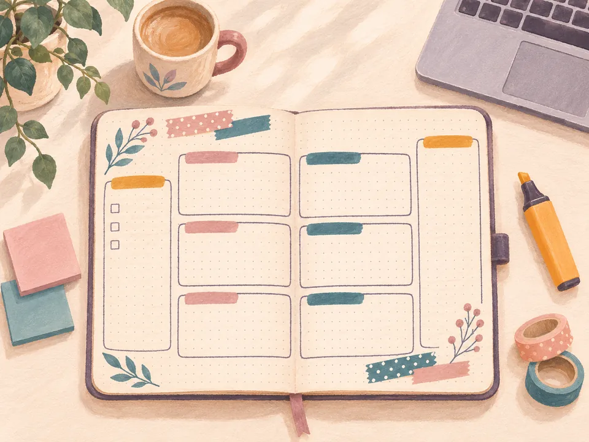

Học phần
11
4 Toán · 4 Tin · 3 Đại cương
HK1 · 2026–2027
Một học kỳ, một bàn học
StudyDesk gom học phần, lịch học, hình thức đánh giá và hạn nộp của học kỳ vào một chỗ, để không phải mở lại thời khóa biểu PDF và nhóm chat mỗi sáng.

11
4 Toán · 4 Tin · 3 Đại cương
31
Tối đa cho phép: 32 TC
11
Trống: chiều Thứ 7
25/11
TOA301 · Bài tập chương 4